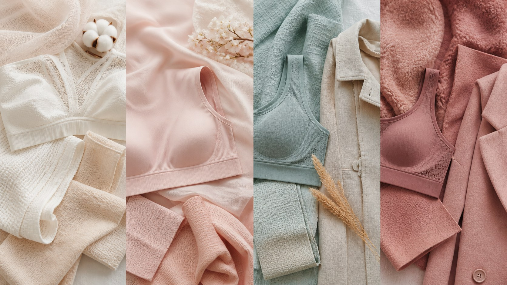

日常美化穿搭
不同季节与面料的穿搭｜让内衣跟着四季换季
内衣也有四季。夏天求轻薄透气，冬天要保暖支撑，选对面料与轮廓，才不算将就，身体也会更舒服。

衣服会换季，内衣也应如此。很多人衣柜里只有一两件「万能款」，从年头穿到年尾，其实舒服是建立在合适之上的。春夏与秋冬对贴身衣物的需求差别很大，选对了，是琐碎日子里很实在的关怀。
春夏天气闷热，内衣的优先项是轻薄、透气、排汗。棉、莫代尔这类亲肤透气的面料是很好的选择，穿起来干爽不闷，出汗了也不会黏在皮肤上。蕾丝轻盈又透气，但在意舒适的朋友，要挑内衬柔软、不扎肌肤的那类。夏天的重点不是「遮盖」，而是让身体自在呼吸。
秋冬气温低，保暖与支撑就显得重要。这时候可以选面料更厚实、包裹更稳的款式，比如加入弹性纤维的混纺，或带适度保暖层的内衣。它给你的是稳定和安稳，即便外衣厚重，贴身这一层仍能托住你，不至于整日疲累。冬天的内衣，也可以是一件暖心的好伙伴。
面料本身也各有性格。棉质亲肤吸汗，是日常的稳妥选择；莫代尔柔软顺滑、垂坠贴身，穿起来几乎没有存在感；蕾丝轻盈又精致，适合想要一点仪式感或更透气的时候；专业运动面料弹性足、排汗快，是活动多或锻炼日子的得力帮手。了解它们，就是在为自己的舒适挑选合适的搭档。
轮廓同样值得留意。无痕内衣没有接缝和蕾丝，穿上贴身衣服也不会透出痕迹，是穿浅色、紧身或薄款上衣时的好伙伴。而带片、带蕾丝的设计，往往更有支撑或造型，适合想要一点线条、或对稳固要求更高的场合。没有哪一种一定更好，全看你今天想要的是隐形，还是安稳。
说到底，内衣的选择是季节与心情的平衡。别让一件内衣在四季里勉力支撑，按季节和面料换着穿，身体会感激你的体贴。换季时的不舒服，常常只是那件内衣还没跟上季节而已。愿意为自己搭配透气的、稳当的、合适的贴身衣物，本就是很温柔的生活态度。
本文用于公众健康教育，不构成医疗建议，不替代面诊。医美决策请与具备资质的医师面诊后作出。